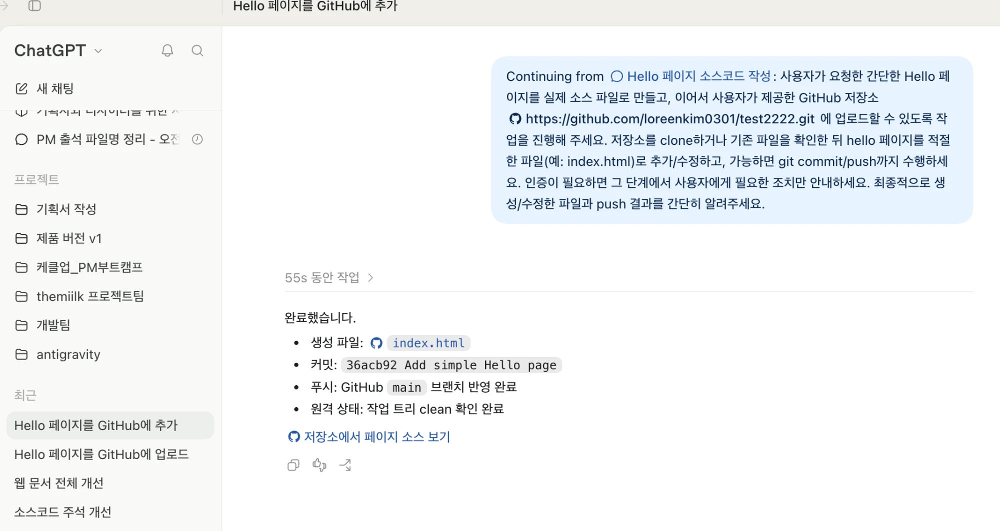

직접 만들기
사업 아이디어를 자연어로 설명하고 간단한 웹 프로토타입을 생성합니다.
중장년 창업자가 ChatGPT를 활용해 사업 아이디어를 직접 화면으로 구현하고, GitHub와 Vercel을 이용해 실제 웹에 배포하는 바이브코딩 입문 실습입니다.
PM/서비스 기획자로 9년 이상의 경험을 쌓았습니다. 기획부터 디자인, AI 바이브코딩까지 직접 하는 기획자로 활동하며, 예비 창업자·재직자·미래의 기획자를 대상으로 기술 교육을 진행하고 있습니다.
이 수업은 코딩 문법을 배우는 개발 수업이 아니라, 창업자가 AI를 활용해 자신의 아이디어를 직접 화면으로 구현해보는 입문 실습입니다. ChatGPT 채팅에서 간단한 프로토타입을 만든 뒤 사이트 형태로 공유하고, 마지막에는 GitHub·Vercel을 이용해 실제 웹에 배포합니다. 실습·설명은 약 90분, 쉬는 시간은 약 10분을 기준으로 총 약 100분으로 구성하며, 쉬는 시점은 현장 상황에 맞춰 유동적으로 운영합니다.
사업 아이디어를 자연어로 설명하고 간단한 웹 프로토타입을 생성합니다.
AI가 만든 결과를 확인하고 필요한 부분을 대화로 수정한 뒤 사이트 형태로 공유합니다.
ChatGPT로 만든 소스코드를 GitHub에 직접 저장하고 Vercel을 통해 실제 웹사이트로 배포합니다.
바이브코딩 이해 · 오늘 사용할 도구
ChatGPT 채팅으로 프로토타입 만들기
ChatGPT Sites로 사이트 배포 · 선택·참고, 대상 플랜 확인 필요
쉬는 시간
GitHub·Vercel로 직접 배포하기 · Work 업로드 참고
세 가지 방식 비교 · 마무리
창업자의 관점에서 바이브코딩이 무엇인지 이해하고, 오늘 사용할 ChatGPT·GitHub·Vercel이 각각 어떤 역할을 하는지 살펴봅니다.
창업자가 모든 코드를 직접 작성할 필요는 없습니다. 다만 아이디어를 AI에게 설명하고 빠르게 화면으로 확인할 수 있다면 개발 전에 사업 아이디어를 구체화하고 다른 사람에게 보여주며 빠르게 검증할 수 있습니다.
머릿속 사업 아이디어를 실제 화면으로 만들어봅니다.
문구·색상·구성을 AI와 대화하며 변경합니다.
완성된 결과를 URL로 만들어 고객·동료에게 보여줍니다.
아이디어를 빠르게 화면으로 만들어 프로토타입을 확인합니다.
Work 모드에서 만든 결과물을 이어서 다루고, GitHub 업로드까지 요청해봅니다.
만든 소스코드를 GitHub에 직접 저장한 뒤 Vercel로 실제 웹주소에 배포합니다.
작게 만들고, 빨리 배우기. 아래는 일반적으로 창업자나 기획자가 서비스를 처음 만들어야 할 때 알아야 할 필수 기초 용어들입니다.
고객의 문제를 해결하는 제품·서비스와 경험 전체입니다. 화면에서 시작해 주문, 배송, 배송 완료까지 고객이 실제로 겪는 사용자 흐름도 포함합니다.
아이디어와 사용자 흐름을 빠르게 확인하는 초기 모형입니다. 실제 결제나 배송이 작동하지 않아도 되며, 고객이 서비스를 이해하고 사용할 수 있는지 확인하는 데 씁니다.
고객이 핵심 가치를 실제로 얻는지 확인하는 가장 작은 서비스입니다. 기능을 적게 넣는 것이 목적이 아니라, 가장 중요한 가정을 실제로 검증하는 것이 목적입니다.
가상의 창업자가 “퇴근 후 저녁 준비가 부담스러운 직장인에게 주 1회 반찬을 배송한다”는 아이디어를 갖고 있다고 가정해보겠습니다. 이 서비스의 프로덕트는 홈페이지 하나가 아니라 메뉴 선택, 신청, 배송, 재주문까지의 경험 전체입니다.
머릿속 아이디어를 글로만 정리한 뒤, 개발자나 제작 업체에 “반찬 주문 앱을 만들고 싶다”고 의뢰하기 쉽습니다. 어떤 화면이 필요한지, 고객이 어떤 순서로 신청하는지 직접 확인하기 어렵고, 수정 요청이 늘어날수록 시간과 비용도 커집니다.
처음부터 앱·결제·배송관리 기능을 모두 만들려 하면, 고객이 실제로 주문할지 확인하기 전에 큰 비용이 들어갈 수 있습니다.
비개발자도 AI에게 서비스 설명을 입력해 메뉴, 가격, 신청 버튼이 있는 한 장의 화면을 먼저 만들 수 있습니다. 이 화면을 고객에게 보여주며 메뉴와 가격, 신청 흐름을 이해하는지 확인한 뒤 필요한 기능만 다음 단계에서 개발합니다.
바이브코딩은 개발자를 완전히 대신하는 일이 아니라, 창업자가 더 구체적인 화면과 요구사항으로 검증·협업하는 방법입니다.
처음부터 주문 앱을 만들 필요는 없습니다. 아래 수준이면 초기 검증을 시작할 수 있습니다.
이번에는 ChatGPT를 기반으로 프로토타입의 초기 버전을 함께 만들어보겠습니다. 짧은 실습으로 화면과 기능이 만들어지는 과정을 익힌 뒤, 같은 방식을 활용해 홈페이지 프로토타입 제작으로 넘어갑니다.
오늘 실습은 ChatGPT 데스크톱 앱 하나로 진행합니다. ChatGPT 화면에서 Chat과 Work를 전환해 사용할 수 있으며, 이번 수업에서도 별도의 코딩 앱을 추가로 설치하지 않고 하나의 ChatGPT 데스크톱 앱에서 실습합니다.
아래 실습 A·B·C는 서로 연결되지 않은 독립 예제입니다. 각 실습을 처음부터 끝까지 순서대로 진행하고, 다음 실습으로 넘어갑니다.
핵심 경험: 엑셀·CSV 파일을 첨부하면 AI가 실제 데이터를 읽고 표와 그래프로 시각화할 수 있다는 점을 확인합니다.
첨부한 파일의 매출 데이터를 분석해서 한 페이지짜리 대시보드를 만들어줘. - 상단에는 총매출·총이익·마진율 요약 카드 - 가운데에는 월별 매출 추이 그래프 - 하단에는 상품별 매출 표 - 첨부한 파일의 실제 데이터만 사용 - PC와 모바일에서 모두 보기 편한 화면으로 구성
“대시보드를 좀 더 보기 좋게 바꿔줘.”
무엇을 바꿀지 AI가 임의로 정합니다. 결과가 매번 달라지고, 멀쩡하던 부분까지 바뀔 수 있습니다.
“상품 표에 상품명 검색창만 추가해줘. 기존 데이터와 그래프는 변경하지 마.”
바꿀 곳과 바꾸면 안 되는 곳이 분명해서, 원하는 부분만 정확히 수정됩니다.
현재 대시보드에서 다음 부분만 수정해줘. [수정할 내용] - 상품 표 위에 상품명 검색창 추가 - 카테고리 필터 추가 (전체 / 패션 / 신발 / 뷰티 / 레저 / 디지털) - 그래프의 X축은 '월', Y축은 '매출(원)'으로 명확하게 표시 [제약조건] - 화면 폭이 좁은 모바일에서는 상품 표를 카드 형태로 표시 - 외부 서버나 추가 데이터는 사용하지 않음 [금지조건] - 첨부한 데이터 값과 요약 카드의 계산 결과는 변경하지 마 - 요청하지 않은 영역의 색상·문구·배치는 변경하지 마
.html 파일을 브라우저로 열어 확인합니다.F12 → 휴대폰 모양 아이콘(기기 모드)을 눌러 스마트폰 화면으로 보기핵심 경험: 계산 로직을 자연어로 알려주면 단순한 화면뿐 아니라 실제로 값이 계산되는 기능도 만들 수 있습니다.
상품 가격 계산기 프로토타입을 만들어줘. [입력] - 상품 가격 - 구매 수량 - 할인율(%) [계산식] - 할인 전 금액 = 상품 가격 × 구매 수량 - 할인 금액 = 할인 전 금액 × 할인율 ÷ 100 - 최종 결제 금액 = 할인 전 금액 - 할인 금액 위 계산식은 그대로 사용하고 임의로 바꾸지 마. 입력창, 계산하기 버튼, 계산 결과가 보이는 화면으로 만들어줘.
Win + Shift + S / Mac: Cmd + Shift + 4Ctrl/Cmd + V) 파일 첨부 버튼으로 올립니다.첨부한 캡처 화면을 확인해줘. [어디에서] 계산 결과 영역 [무엇을 했더니] 상품 가격 10000, 수량 3, 할인율 10을 입력하고 계산하기를 눌렀더니 [어떤 결과가 나왔고] 최종 결제 금액이 30,000원으로 표시돼 [원래는] 계산식대로라면 27,000원이 나와야 해 원인을 찾아서 이 부분만 고쳐줘. 정해 둔 계산식과 다른 화면은 변경하지 마.
현재 계산기에서 다음 부분만 수정해줘. - 값을 입력하면 결과가 자동으로 계산되게 변경 - 모든 값을 비우는 '초기화' 버튼 추가 - 최종 결제 금액을 가장 크게 강조 - 입력창과 버튼을 중장년층도 사용하기 쉽게 크게 구성 기존 계산식은 변경하지 마.
핵심 경험: 데이터를 추가(Create)·조회(Read)·수정(Update)·삭제(Delete)하는 CRUD를 직접 경험하고, 화면에서 동작하는 것과 데이터가 저장되는 것의 차이를 확인합니다.
프로젝트 관리용 TODO 체크리스트 프로토타입을 만들어줘. - 할 일 목록 보기 - 새로운 할 일 추가 - 할 일 내용 수정 - 할 일 삭제 - 완료 여부 체크 - 완료 / 진행중 / 대기 상태 구분 먼저 브라우저 화면에서 추가·수정·삭제가 동작하도록 만들어줘. 외부 서버나 데이터베이스는 사용하지 마.
현재 TODO 체크리스트에 브라우저 로컬 저장 기능을 추가해줘. - 할 일을 추가·수정·삭제하거나 상태를 변경할 때마다 localStorage에 자동 저장 - 브라우저를 새로고침해도 기존 목록과 상태가 유지 - 외부 서버, 로그인, 데이터베이스는 사용하지 않음 기존 디자인과 CRUD 기능은 변경하지 마.
localStorage는 현재 사용하는 브라우저에만 저장되므로 다른 컴퓨터나 다른 사용자와 공유되지 않습니다. 실제 예약·회원·주문 서비스에는 별도의 서버와 데이터베이스가 필요합니다.대시보드·계산기·체크리스트 실습은 여기서 종료합니다. 이제 새 대화를 열고, 하나의 홈페이지를 처음부터 만들고 수정하는 실습을 시작합니다. 이 파트부터는 하나의 홈페이지 프로토타입을 계속 생성·수정합니다. 예시 프롬프트 안에서는 가상의 서비스명 ‘LocalLink’를 사용합니다.
처음부터 모든 내용을 한 번에 요청하지 않고, 메뉴 구조를 먼저 잡은 뒤 메뉴별로 페이지를 하나씩 채워 나갑니다.
가상의 스타트업 'LocalLink'의 회사 홈페이지를 만들어줘. [대상] 지역 소상공인과 협업하려는 브랜드 담당자 [메뉴] 상단에 '홈 / 회사 소개 / 문의하기' 메뉴를 만들고, 메뉴를 누르면 해당 화면으로 전환되게 해줘. [홈 화면 구성] - 핵심 소개 문구 - LocalLink가 제공하는 가치 3개 - 이용 과정 3단계 - '협업 방식 보기' 버튼 (누르면 이용 과정 영역으로 이동) [회사 소개 · 문의하기 화면] 지금은 제목과 '준비 중' 안내만 넣어줘. 내용은 이후에 하나씩 추가할 거야. [디자인] - 신뢰감 있는 남색과 밝은 배경 - 글자를 충분히 크게 구성 - 스마트폰에서도 보기 편한 화면 하나의 HTML 파일로, 결과를 바로 확인할 수 있도록 미리보기 가능한 형태로 만들어줘.
'회사 소개' 메뉴 화면의 내용을 채워줘. - 회사 비전 한 문장 - LocalLink가 해결하는 문제 3가지 - 팀 소개 3명 (가상의 이름, 역할, 한 줄 소개) - 회사 연혁 3개 (2025년 설립부터) 홈 화면, 문의하기 화면, 상단 메뉴는 변경하지 마.
'회사 소개' 화면에서 다음 부분만 수정해줘. - 팀 소개를 사진 자리가 있는 카드 형태로 변경 - 회사 연혁을 세로 타임라인 형태로 변경 - 비전 문장을 화면 상단에 크게 강조 다른 화면과 메뉴, 기존 문구는 변경하지 마.
'문의하기' 메뉴 화면을 만들어줘. - 입력 항목: 이름, 회사명, 이메일, 문의 내용 - '문의 보내기' 버튼 - 버튼을 누르면 화면 아래 '접수된 문의 목록'에 방금 입력한 내용이 추가되게 해줘 외부 서버나 데이터베이스는 사용하지 마. 홈 화면과 회사 소개 화면, 상단 메뉴는 변경하지 마.
localStorage를 쓰더라도 내 브라우저에만 남기 때문에, 고객이 보낸 문의를 대표가 다른 컴퓨터에서 확인할 수는 없습니다.'문의하기' 화면에서 다음 부분만 수정해줘. - 이름, 이메일, 문의 내용이 비어 있으면 '필수 항목을 입력해주세요' 안내 표시 - 이메일 형식이 틀리면 안내 문구 표시 - 문의를 보내면 '문의가 접수되었습니다' 완료 메시지 표시 - 폼 위에 '이 화면은 시연용이며 입력 내용은 저장·발송되지 않습니다' 안내 문구 추가 외부 서버나 데이터베이스는 사용하지 마. 다른 화면과 메뉴는 변경하지 마.
2.2 실습에서 익힌 확인·개선 방법을 이번 홈페이지에도 그대로 적용합니다.
.html 파일로 다운로드해 열어봅니다.index.html로 저장하고, 더블클릭해 브라우저에서 열립니다. 메뉴 전환·버튼·문의 폼이 미리보기와 똑같이 동작하는지 확인합니다. 이 파일은 2.4, 3장, 4장에서 계속 사용합니다.index.html 한 파일에 들어 있습니다. 하지만 실제로 운영되는 서비스는 화면별 파일, 디자인 파일, 동작 파일, 이미지, 그리고 회원·문의·주문 데이터를 저장하는 서버와 데이터베이스, 관리자 페이지 등 수십~수천 개의 파일과 시스템으로 이루어져 있습니다.2.3에서 저장한 index.html을 열어보며, 오늘 만든 결과물이 어떤 형태의 파일인지 간단히 이해합니다. 코드를 외울 필요는 없고, “이 파일은 이렇게 생겼구나”를 확인하는 것이 목표입니다.
HTML 파일은 특별한 프로그램이 있어야 열리는 파일이 아니라, 글자로 이루어진 텍스트 파일입니다. 브라우저로 열면 화면이 보이고, 메모장 같은 텍스트 편집기로 열면 그 화면을 만드는 코드가 보입니다.
index.html 우클릭 → 연결 프로그램 → 메모장Ctrl + F(Mac: Cmd + F)로 홈 화면의 제목 문구를 검색해 일부 글자를 수정합니다.*.txt)로 되어 있으면 index.html.txt로 저장되어 브라우저에서 열리지 않습니다. 파일 형식은 모든 파일, 인코딩은 UTF-8로 저장합니다. 문구 수정이 아닌 기능 수정은 코드를 망가뜨리기 쉬우므로 AI에게 요청하는 편이 안전합니다.파일 이름 뒤의 .html을 확장자라고 하며, 컴퓨터는 이 확장자를 보고 “브라우저로 여는 웹페이지 파일”이라고 판단합니다. 다만 Windows와 Mac은 기본 설정에서 확장자를 숨기는 경우가 많아, 파일 이름이 index로만 보일 수 있습니다.
| 구분 | 확장자가 안 보일 때 설정 방법 | 파일 아이콘 |
|---|---|---|
| Windows 11 | 파일 탐색기 → 보기 → 표시 → 파일 확장명 체크 | 기본 브라우저(크롬·엣지·사파리 등)의 아이콘으로 표시 |
| Windows 10 | 파일 탐색기 → 보기 탭 → 파일 확장명 체크 | |
| Mac | Finder → 설정 → 고급 → 모든 파일 확장자 보기 체크 |
메모장으로 연 코드를 위에서 아래로 훑어보면, 대부분의 HTML 파일은 아래와 같은 공통된 뼈대를 갖고 있습니다.
<!DOCTYPE html> ← ① 시작: "이 파일은 HTML 문서입니다"라는 선언
<html lang="ko"> ← ② HTML 문서의 시작
<head> ← ③ 화면에 보이지 않는 설정 영역
<title>LocalLink</title> (브라우저 탭에 보이는 제목, 디자인 설정 등)
<style> ... </style> (색상·글자 크기 같은 디자인)
</head>
<body> ← ④ 실제로 화면에 보이는 내용
<h1>지역과 브랜드를 잇는 LocalLink</h1>
...
<script> ... </script> (버튼·메뉴 전환 같은 동작)
</body>
</html> ← ⑤ 끝: HTML 문서가 여기서 닫힘
파일의 첫 줄과 마지막 줄입니다. 대부분의 태그는 <이름>으로 열고 </이름>으로 닫습니다.
탭 제목, 글꼴, 색상 같은 설정이 들어갑니다. 화면 본문에는 나타나지 않습니다.
메뉴, 제목, 버튼, 문의 폼처럼 실제 화면에 보이는 내용이 들어갑니다.
HTML 파일은 서버나 인터넷 연결 없이 내 컴퓨터의 브라우저만으로 열립니다. 이메일 첨부, USB, 사내 메신저, 공유 폴더 등으로 파일을 전달하면 받은 사람도 더블클릭만으로 같은 화면을 볼 수 있습니다. 별도 프로그램 설치나 회원가입도 필요 없습니다.
인터넷이 연결되지 않은 내부망 PC에서도 열 수 있도록 만들어줘. - 외부 라이브러리, 웹 글꼴, 외부 이미지, CDN 링크는 사용하지 마 - 그래프가 필요하면 외부 라이브러리 없이 직접 그려줘 - 필요한 디자인과 동작은 모두 index.html 한 파일 안에 넣어줘 - 외부 서버나 데이터베이스는 사용하지 마
확인 방법: 와이파이를 끄거나 랜선을 뺀 상태에서 파일을 열어 화면이 그대로 보이는지 확인합니다.
<!DOCTYPE html>부터 마지막 줄 </html>까지 빠짐없이 복사해야 합니다. 답변이 중간에 끊겨 </html>이 없다면 “이어서 끝까지 작성해줘”라고 요청합니다.ChatGPT에서 만든 홈페이지를 바탕으로, 이번에는 다른 사람에게 보여줄 수 있는 사이트 형태로 만들어봅니다.
이 파트는 선택 항목입니다. Sites를 사용할 수 있는 계정이라면 참고해 따라 해보고, 사용할 수 없다면 건너뛰고 4장으로 이동합니다. 2.3에서 저장한 index.html을 ChatGPT 데스크톱 앱에서 사이트로 게시하는 흐름만 정리합니다.
index.html을 파일 첨부 버튼으로 올립니다.@Sites를 선택해 사이트 게시를 요청합니다.참고 · ChatGPT Sites 공식 사용 가이드 — Sites 생성, 미리보기, 게시 및 관리 방법을 설명하는 OpenAI 공식 안내입니다.
↗ ChatGPT Sites 공식 가이드 보기
2.3에서 만든 index.html을 내 손으로 직접 GitHub에 올리고, Vercel에서 직접 배포해 인터넷에서 접속할 수 있는 주소를 만듭니다. 마지막으로 참고 실습으로, 같은 업로드 작업을 ChatGPT 데스크톱의 Work 모드에 요청해봅니다.
2.3에서 ChatGPT로 만들고 저장한 홈페이지 소스코드입니다.
소스코드와 변경 내용을 온라인에 저장합니다.
GitHub에 올린 프로젝트를 가져와 실제 웹주소로 배포합니다.
GitHub는 배포 서비스가 아니라 소스코드와 변경 이력을 보관하는 공간입니다. 2.3에서 저장한 index.html을 GitHub 웹사이트에서 직접 업로드합니다.
locallink-homepage)을 입력해 생성합니다.index.html을 업로드합니다.index.html이어야 Vercel이 첫 화면으로 인식합니다.index.html이 Repository 목록에 보이면 업로드 완료입니다. 파일이 보이지 않으면 아직 4.3으로 넘어가지 않습니다.https://프로젝트명.vercel.app
index.html을 같은 GitHub Repository에 다시 업로드(Add file → Upload files → Commit changes)하면, Vercel이 변경을 감지해 자동으로 다시 배포합니다.4.2에서 손으로 했던 업로드를 이번에는 ChatGPT 데스크톱 앱의 Work 모드에 자연어로 요청해봅니다. Work 모드에서도 GitHub 업로드가 가능하지만, 기본은 4.2의 직접 업로드이고 Work 모드는 그다음 방법입니다. Work 모드로 되지 않으면 직접 업로드로 진행하면 되며, 이미 4.2·4.3에서 배포는 완료된 상태입니다.
index.html을 첨부합니다.https://github.com/내아이디/locallink-homepage)을 복사합니다.아래 GitHub 레포지토리에 첨부한 index.html 코드를 업로드해줘. 레포지토리 주소: https://github.com/내아이디/locallink-homepage - 기존 index.html이 있으면 첨부한 파일로 교체 - 커밋 메시지는 '홈페이지 내용 업데이트'로 작성 - 업로드 전에 권한 승인이나 내가 확인해야 할 작업이 있으면 먼저 알려줘
index.html이 바뀌었는지 확인합니다.
https://github.com/…/test2222.git)와 함께 업로드를 요청하자, index.html 생성 → 커밋 → main 브랜치 push까지 완료하고 결과를 알려준 화면입니다.참고 · ChatGPT Work·Codex 공식 가이드 — ChatGPT 데스크톱 앱에서 Work와 Codex를 전환하는 방법과 기본 사용 방식을 확인할 수 있는 OpenAI 공식 안내입니다. Codex 활용은 아래 4.5 선택 항목을 참고합니다.
↗ Work·Codex 공식 가이드 보기
이 파트는 선택 항목입니다. 같은 ChatGPT 데스크톱 앱에서 Codex로 전환하면, 내 컴퓨터의 프로젝트 폴더에서 AI가 파일을 직접 만들고 수정하며 GitHub에 push까지 요청할 수 있습니다. 여러 파일로 된 프로젝트를 계속 수정·운영할 때 유용합니다.
index.html을 넣은 뒤 그 폴더를 엽니다.현재 프로젝트의 소스코드를 GitHub Repository에 올려줘. 레포지토리 주소: https://github.com/내아이디/locallink-homepage - Git 저장소 초기화가 필요하면 진행 - 변경 내용을 커밋 - main 브랜치로 push 각 단계에서 권한 승인이나 내가 확인해야 할 작업이 있으면 먼저 알려줘.
| 방법 | 오늘의 역할 | 추천 상황 |
|---|---|---|
| ChatGPT 채팅 | 빠른 프로토타입 | 아이디어를 화면으로 먼저 확인할 때 |
| ChatGPT Work / Sites (선택) | 사이트 게시 · GitHub 업로드 요청 | Sites가 제공되는 계정에서 빠르게 공유하거나, 직접 업로드에 익숙해진 뒤 반복 업로드를 AI에게 맡길 때 |
| GitHub + Vercel | 소스 보관·실제 배포 | 계속 수정하고 운영할 웹사이트가 필요할 때 |
ChatGPT → index.html 저장 → GitHub → Vercel (선택: Sites 게시 · Work로 GitHub 업로드)
코드를 모두 이해한 뒤 시작하는 것이 아니라, 작은 결과물을 직접 만들어보며 필요한 기술을 하나씩 이해합니다.